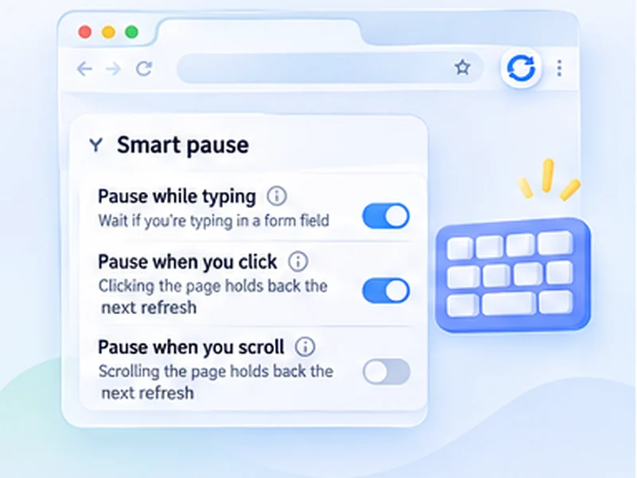

It refreshes. Never mid-sentence.
A refresh that fires while you are typing wipes out your work. Smart pause notices you are busy and holds the reload until you stop.

How pause while typing works
A refresh that fires while you are typing wipes out your work. Smart pause notices you are busy and holds the reload until you stop.
On a page you both watch and work in, such as an inbox or an admin screen, set clicks and scrolling to restart the countdown. The page then only refreshes after you have left it alone.
Quick setup
Open Advanced settings, Smart pause.
Leave Pause while typing on.
Switch on Pause when you click or Pause when you scroll if you read the page between refreshes.
Pick Restart the countdown or Stop refreshing.
Auto refresh without losing what you typed
The usual problem with auto refresh is a reload that lands while you are filling in a form, and wipes it. Smart pause watches for that. If you have typed in a text field in the last few seconds, the refresh is held and tried again a moment later.
The on-page counter says it is waiting, so you know the reload has been delayed and not forgotten.
Pause on clicks and scrolling too
Two optional switches extend the idea to reading and browsing. Turn on Pause when you click or Pause when you scroll and any interaction with the page holds the next refresh.
Restart the countdown
Each click or scroll starts the wait again from the beginning. The page only reloads once you have left it alone for a full interval.
Stop refreshing
The first click or scroll ends the run completely. Useful when you only want refreshing while you are away.
Where it helps most
- Inboxes and admin screens you both watch and work in.
- Long articles or lists you read between refreshes, together with keep scroll position.
- Auctions, so a bid you are typing is not cleared.
A worked example: a shared inbox
You keep a support inbox on a 60-second refresh so new messages appear. A customer writes; you click into the reply box and start typing. At the 60-second mark the counter shows Waiting, you are typing, and nothing reloads. You finish, press Send, and a few seconds later the refresh resumes.
Switch on Pause when you click as well, with Restart the countdown, and merely clicking into a message buys you another full minute to read it.
Restart the countdown or stop refreshing?
Restart the countdown suits
pages you dip in and out of: inboxes, admin lists, dashboards with filters. Refreshing carries on once you leave the page alone.
Stop refreshing suits
pages you only want refreshed while you are away. The moment you come back and touch the page, the run ends.
What smart pause cannot do
- It does not save your text. Once you stop typing for a few seconds, the page reloads. Submit or copy first.
- It does not see inside embedded frames from other sites, such as some payment forms.
- It does not pause for mouse movement alone. Only typing, clicks and scrolling count.
Auto refresh without losing form data
For a page with a long form, the safest set-up is Pause while typing plus Pause when you click with Stop refreshing. Your first click into the form ends the auto refresh entirely, and you restart it when you are done.
At a glance
- Pauses while you type. If you typed in a form field in the last few seconds, the refresh waits and tries again shortly after.
- Clicks and scrolling count too. Optionally hold the refresh whenever you click or scroll the page.
- You choose what happens next. Either restart the countdown each time you interact, or stop refreshing completely.
Questions, answered.
Does auto refresh delete what I am typing?
Not while you are typing. Smart pause holds the reload, then refreshes a few seconds after you stop, so save or submit first.
Is smart pause on by default?
Pause while typing is on. The click and scroll options are off until you enable them.
What counts as scrolling?
The mouse wheel, touch scrolling, and keys such as Page Down and the arrow keys. Scrolling done by the website itself is ignored.
Can I turn it off?
Yes, under Advanced settings, Smart pause.
Does it work with every form?
With standard text boxes, text areas, drop-downs and rich-text editors.
Will it lose text I already typed?
It delays the refresh while you are typing. Once you stop for a few seconds the page does reload, so submit or save first.
Does clicking the on-page counter pause it?
No. Only clicks on the page itself count.
Try it on your next open tab.
Free for Chrome and Firefox, with no account required.
Not seeing the feature you need?
Share the browser task you would like to make easier. Your idea helps guide what gets built next.